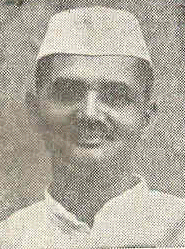

श्याम नंदन प्रसाद मिश्र
प्रमुख कार्यकाल:
विदेश मंत्रालय, कैबिनेट मंत्री
१९७९ - १९८०
संचार मंत्रालय, कैबिनेट मंत्री
१९७९ - १९८०
योजना मंत्रालय, उपमंत्री
१९६४ - १९६६

लाल बहादुर शास्त्री मंत्री परिषद
योजना मंत्रालय
उपमंत्री
चरण सिंह मंत्री परिषद
लाल बहादुर शास्त्री मंत्री परिषद

1_Upload_2968.pdf

लाल बहादुर शास्त्री
o-Lal_Bahadur_Shastri.htmlप्रधानमंत्री
९ जून १९६४ - ११ जनवरी १९६६
श्याम नंदन प्रसाद मिश्र
o-Shyam_Nandan_Prasad_Mishra.htmlउपमंत्री
१० सितंबर १९६४ - ११ जनवरी १९६६
प्रासंगिक आदेश
1_Upload_2968.pdf[0]१० सित॰ १९६४पोर्टफोलियो के परिवर्तन